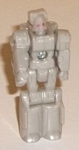
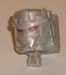
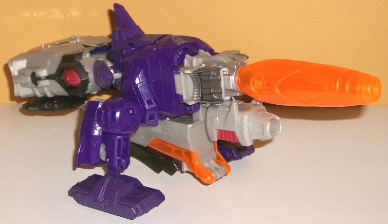
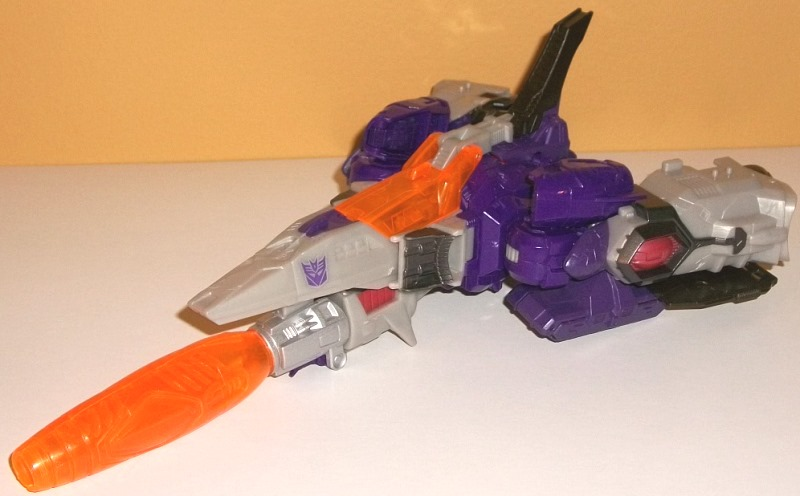
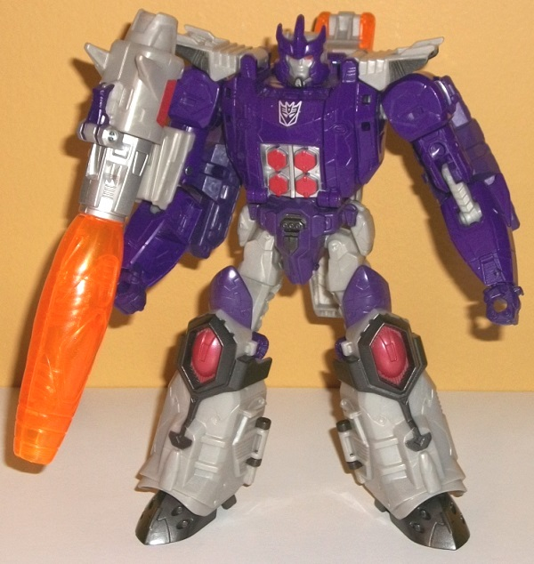

Allegiances
: Decepticon
Size
: Leader
Difficulty of Transformation to Vehicle
:
Easy
Difficulty of Transformation to Robot
:
Medium
Color Scheme
: Dark purple, light
milky gray, transparent orange, and some metallic black, silver, pale red,
and dark dull purple
Rating
: 7.2


"Nucleon" is very obviously
a Titan Master version of Megatron-- which is fitting, given the whole
Megatron---> Galvatron evolution bit. Nucleon is all light milky gray,
which is pretty drab, unfortunately, but expected-- for a toy this tiny,
I can't reasonably expect it to be painted silver. The usual Megatron details
are all here-- the arms and legs are pretty boxy, as is the chest and waist,
and the head is pretty much spot-on "mini-Megatron", complete with red
eyes (unfortunately the only painted detail in this mode). The head is
a bit more square than Megatron's head usually is, though, so that his
head can fit in the Titan Master head slot on the Titans Returns toys.
No fusion cannon, either, given the Titan Master proportions requirement.
As with all Titan Master figures, Nucleon can move at the head, shoulders,
hips, and knees, (with the latter two moving as one for both legs, given
that they're pinned or molded together). In head mode, Nucleon looks like
he's halfway between a Megatron head and a Galvatron head. It's completely
gray except for the red eyes, with the general shape a bit more of a "buckethead"
than Galvatron, but with a few more details on the sides than Megatron
and a small crown-like detail along the top-- not as pointy as Galvatron's
head, but more pointy than Megatron's. A nice, rather unique head, if you
ask me-- I just hate how boring the colors are and how only the eyes in
each mode are painted.



Galvatron finally gets
a new toy with his classic "futuristic" cannon alt mode for the first time
since his original G1 toy! Like the original, it doesn't really resemble
anything "real-life"-- it's a somewhat curvy cannon with a long tip, some
spiky bits near the center, and some treads with a fair amount of bulk
in the back. The front part and top part of this mode generally look pretty
good and solid when compared to the original-- but there's definitely a
fair amount of extras/kibble in this mode. The robot legs are the biggest
issue, very obviously sticking out the back end. Granted, they're shortened
a bit, but they stick out the back just a bit TOO far, and the clip that's
supposed to keep the two legs together doesn't really work all that well.
The cockpit for the spaceship mode also sticks out very obviously from
the bottom, along with a short bit that becomes the back end of the cannon
in the other modes. On a lesser note, the "legs" that lead down to the
treads have the lower arms rather obviously on the back of them. All in
all, all these extras are a bit much and subtract a fair amount from the
look of this mode, although I wouldn't say they outright ruin it. It's
considerably more accurate than his original toy in terms of colors, with
most of the cannon being a nice dark purple, with a light milky gray being
the other main color. Unfortunately, like with most light milky grays,
it's a pretty bland shade of the color, and I wish it had been done in
mostly silver or at least a more glittery, semi-metallic shade of the plastic.
The purple paint is also noticeably lighter and paler than the purple plastic,
which is a bit of a shame. (The paint is mostly used on the top and the
treads.) The transparent orange for the cannon looks absolutely marvelous
and has just a bit of glitter in it-- it really goes nicely with the purple.
As for paint apps, there's some nice metallic black on the sides of the
rear of the cannon and on some of the leg details on the back end-- I wish
more of this color had been used on the gray, particularly on the bottom
and back of this mode. The mold detailing is decent, being somehwat complex
and "armor-plated" when it needs to be-- such as on the rear and middle,
which becomes the robot chest and legs-- while the pieces that are more
for cannon mode (like the cannon itself) are a bit smoother-- with the
sole exception of the treads, which have an impressive amount of detailing
(they don't roll, alas). For articulation in this mode, the tread legs
can move where they connect to the body at two points, and back-and-forward
slightly at the top of the tread pieces themselves. There's also four pegs
near the back end of this mode-- on the top of the collapsed legs-- that
you can put Titan Masters on.
Being a Titans Return
voyager, Galvatron has a second alt mode, and it's a spacecraft... kinda.
The front cockpit section (yes, you can fit a Titan Master in there) looks
really nice, with a long nosecone, an orange cockpit, a nice tailfin on
the back that slides over the existing purple spike there, and the cannon
on the bottom makes for a nice (if overly large) main gun for the spacecraft.
However, once you get past the cockpit the sides of this mode just become
a mess. The cannon legs and treads fold up nice and compact, but still
poke out from the sides more than I'd like. The biggest, most obnoxious
offenders, though, are (again) the robot legs. They're not even connected
to each other in this mode, but instead extended slightly and slotted into
a small peg on each side (a peg that doesn't do its job of locking each
leg in place very well). Are they supposed to be wings? Boosters? I don't
know, but they have a really hard time looking like anything except oddly
splayed legs. They just look awful. Generally I prefer to forget about
this mode, honestly.
Galvatron's robot mode
generally looks good, and is definitely where the priority in terms of
his mode design went. His proportions in this mode are fairly solid, with
fairly thick arms; nice proportional legs with somewhat royal-looking knee
details and panels that close up the legs on the back so they don't look
hollow anymore; fairly G1-accurate shoulder details; and a really nicely-done
main body, with excellent silver-and-pale-red angular "abs" details. Just
like the other modes, there are a few kibble issues, but they're relatively
minor compared to the other two modes-- the spaceship cockpit folds behind
Galvatron's back, but out of the way of articulation, so it's a minor issue.
A slightly bigger issue are the tread pieces behind Galvatron's arms, which
make his upper arms look a bit odd from certain angles. There's also just
some oddities about this mode that easily could've been changed. Galvatron's
cannon looks nice, but it mounts on the FRONT side of his arm... so he
has to hold it at an odd angle to really pose well with it, and his hollow
lower arms-- which I normaly wouldn't mind too much, given the dark colors--
are made really obvious because of this. Also, Galvatron's head-- no. Just...
no. A little front bit of crown flips up in front of Nucleon's head. There
is NO angle where this looks good-- not even from the front, because the
face is a little too far behind the crown. This is just... really bad.
As for articulation, Galvatron can move SLIGHTLY back-and-forth at the
neck, as well as movement at the shoulders (at three points), shoulder
"flaps", elbows (at two points), hips (at three points, with the hip "flaps"
also being able to move at one point), knees, and at the ankles at two
points. Thus, he's fairly articulated, though his cannon can really get
in the way of arm movement.
Galvatron has a few
nice ideas-- like finally getting an updated, articulated version of his
G1 design with a fairly accurate cannon mode-- but the combination of the
Titan Master and triple changer gimmicks weigh him down too much. His cannon
mode looks nice in the front, but has a fair amount of kibble; his spaceship
mode is atrocious outside of the cockpit and cannon; and his robot mode--
while the best of the three modes-- has some minor kibble, a really odd
mounting point for his cannon, and an utterly ridiculous-looking head.
Poor Galvatron, the guy just can't get a good official update-- this is
my least favorite of the Titans Return voyagers.
Review by Beastbot